打破傳統填鴨體制。結合 Figma 沉浸式視覺白板、Notion 智能後台 與 全自動 AI 課後閉環系統，為每一位學員量身打造精準的破分躍遷路徑。
擺脫死背單字 7000 字與枯燥文法公式。我們用認知心理學與現代語言學，把抽象規則轉化為清晰直覺。
Cognitive Iteration
比起要求學生死記硬背，我更重視「認知迭代（Cognitive Iteration）」的科學本質。透過課堂多維情境交替刺激與課後 AI 間隔重複回測，讓核心詞彙與語法結構在不同語境中自然浮現，將短期記憶徹底沉澱為永久的語言神經本能。
Internal Sonic Space
閱讀提速的核心不是「大量硬刷題」，而是在心中建立母語節奏的「聲音空間」。深入剖析弱讀、連音與語調起伏，在開口與閱讀時自然切換英語大腦。
Etymology & Structural Logic
從印歐原始語根（PIE）到拉丁、希臘詞源，看穿單字背後的「隱喻容器」。不再死背字串，而是徹底理解詞彙構造與高頻搭配詞（Collocations）。
Interdisciplinary Reasoning
教材取材自行為經濟學（推力理論 Nudge Theory）、神經科學（NAD+ 與神經可塑性）、Biohacking 與當代科技播客（Huberman Lab、Lex Fridman），直接接軌國際頂尖思潮。
課堂結束後的 10 分鐘內，系統級背景自動化管線（Sidecar Daemon）即刻自主啟動。 完成從「視覺辨識 ➔ 雙軌回饋 ➔ 客製作業 ➔ 母語音檔 ➔ 錯題重測 ➔ 成長儀表板」的全量閉環交付。
拒絕枯燥投影片。在無邊界數位白板上即時繪製文法骨架圖、精細拆解長難句、手寫錯題圈記。所有學習歷程留下清晰視覺軌跡。
系統自動比對 Notion 學生課表，喚醒視覺解析引擎，全量讀取當日白板紅筆訂正、題型劃記與單字板書，提煉出當日核心弱點標籤。
自動產生 👦 學生版（親切心法、踩雷避坑點、本週任務）與 👨👩👦 家長版（客觀進度、量化指標、後續追蹤），即時寫入 Notion 課堂紀錄。
產出 40~50 核心單字 + 35~44 題全真測驗 + 詳解。自動生成 Word (.docx)、PDF 與手機一秒閱覽的 PNG 預覽圖。
作業中的閱讀長文與克漏字篇章，自動生成美式母語等級的高音質朗讀 MP3，收錄於專屬音檔資料夾，供學生邊聽邊讀、模仿語調。
白板錯題自動登錄專屬錯題庫（Error Bank），系統在後續作業中依遺忘曲線自動重新注入盲點測試，連續 2 次正確才標記為「已掌握」。
1. 今日戰果：恭喜通過全民英檢中級初試 172 分與複試雙合格！今日順利推進 Unit 6「名詞的格與代名詞」，全文法重構進度達 6/16 單元！
2. 避坑點提醒：不定代名詞 one vs. the other vs. another 的範圍指涉不要靠直覺猜，先看「母群體是否有指定數量」。有 the 必定代表「剩下全部」！
3. 本週修煉任務：完成雲端作業資料夾內的 Unit 6 綜合測驗卷（40 題），音檔已為你合成好在「音檔/」目錄，通勤時跟讀 2 遍！
• 學員姓名：柏文｜國三｜目標：國中教育會考 A++ 滿級分
• 最新實測里程碑：正式取得全民英檢中級合格證書（初試 172 分高分通過），已具備高中畢業與 CEFR B1+ 實戰水平。
• 當前課程重心：全套會考 16 單元全文法框架重構。目前進度 38%（6/16 單元）。白板檢討作答掌握度維持在 92% 優良區間。
• 作業派發說明：今日課堂之三格式複習卷已同步自動發布至 Google Drive，並將錯題登錄至艾賓浩斯螺旋錯題庫進行定期回測。
每次課後 10 分鐘內自動產出：Word (.docx) ＋ PDF ＋ 高解析 PNG 手機預覽圖 ＋ AI 美語朗讀 MP3 音檔
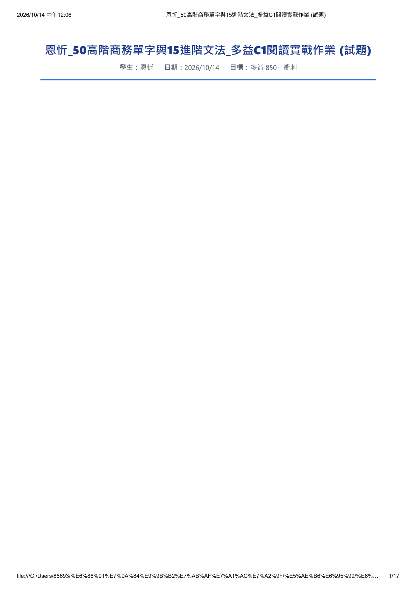
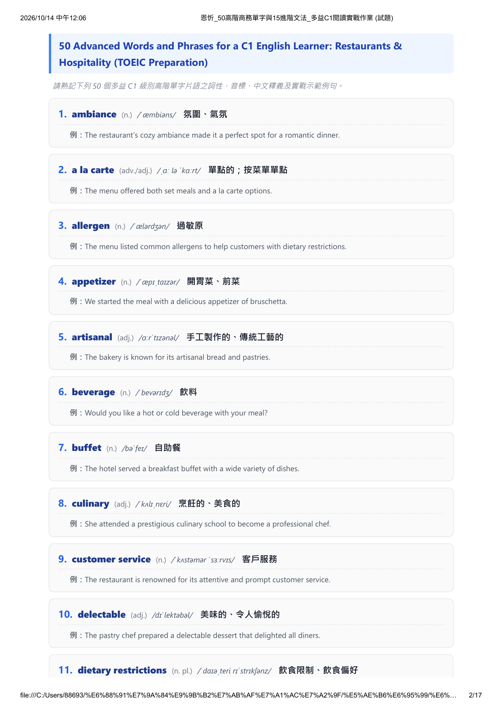
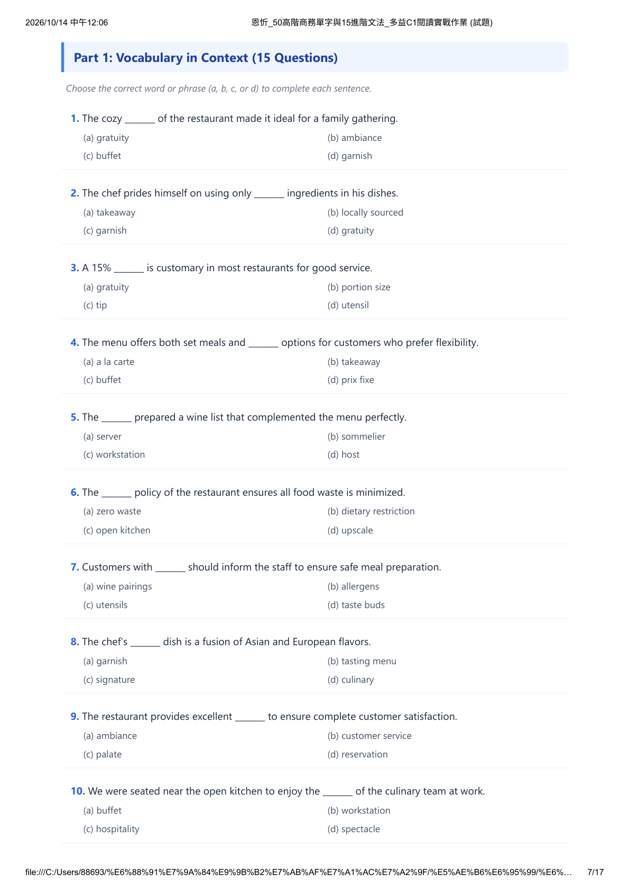
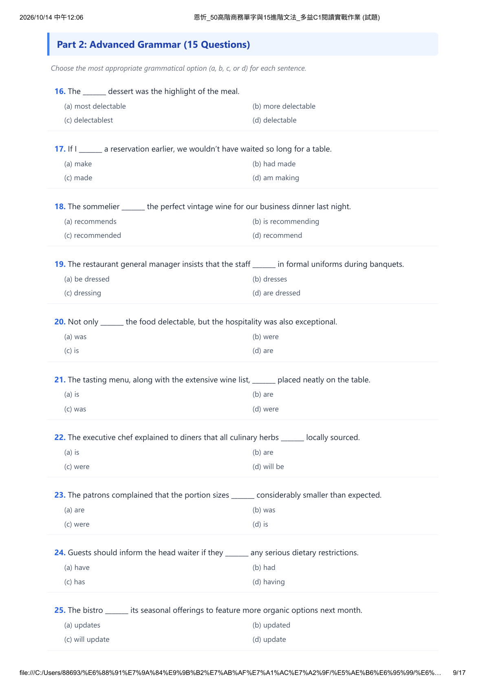
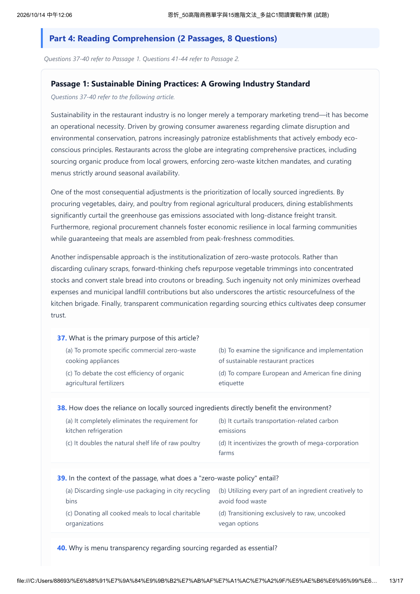
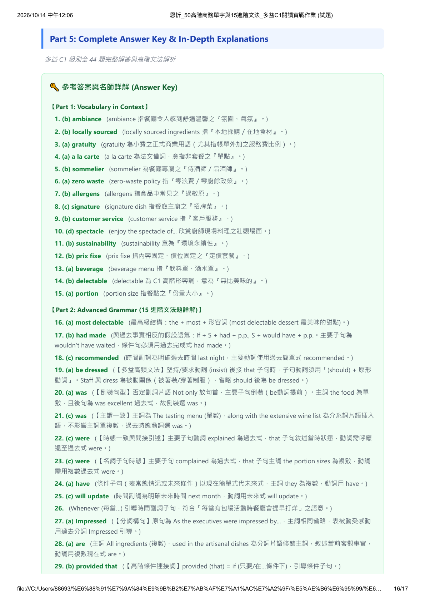
• Part 1: 50 Words and Phrases 含 KK 音標、詞性、字源、中譯、商務情境例句
• Part 2: Complete Test Paper (44 題全真測驗)：單字語境 15 題 ＋ 進階文法 15 題 ＋ 篇章克漏字 6 題 ＋ 雙篇長篇閱讀 8 題
• Part 3: Answer Key & In-Depth Explanations 名師解析與思路拆解，直擊盲點
• Part 4: AI Native Speaker Audio (MP3) 篇章閱讀真聲朗讀，隨身聽力跟讀訓練
告別「感覺有進步」的模糊臆測。全體學生六維能力統一錨定 CEFR C2（母語頂尖級） 參照基準，直接調閱白板真實筆跡、作答數據與歷次走勢。
外環 100 分 = CEFR C2 母語級流利度
柏文已正式通過全民英檢中級（初試 172 分、複試雙合格），具備 CEFR B1+ / 高中畢業程度之英文實戰力；目前正全力重構國中全文法 16 單元。白板題目答題流暢，下階段將導入長篇會考雙篇閱讀題型提速。
「柏文在文法 Unit 6 的觀念掌握度極佳，隨堂測驗答對率達 93%。本次指派的課後作業包含 40 個會考核心單字與全真題組，音檔已備妥，請提醒孩子於週日前完成複習。」
以《學測英文作文破分階梯：全 15 單元 A4 黃金四頁版》為例，揭示如何以「認知負荷最小化」與「名詞化思辨」，帶領學生完成思維躍遷。
盲點剖析：依賴廉價形容詞（funny, convenient），文章淪為流水帳，無法提煉日常現象背後的抽象本質。
進階關鍵：句型結構改善，但依然缺乏「名詞化概念命題」，無法跨過 15 分的頂標門檻。
破分心法：動用 encapsulate（語源自拉丁文小膠囊，封存高密度張力），從「形容詞堆砌」躍升為「抽象名詞命題」！
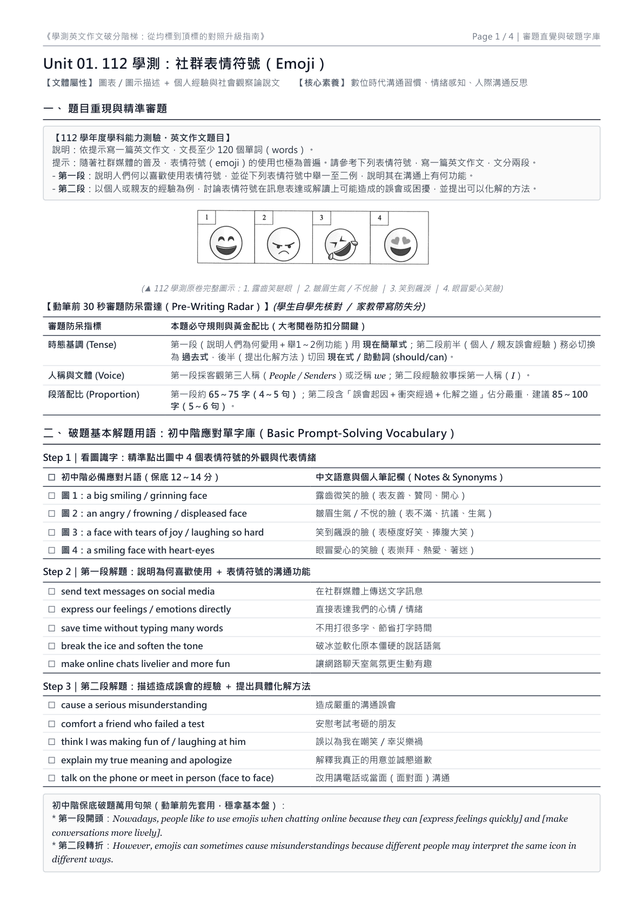
動筆前 30 秒防呆雷達、圖表表情符號情緒分類、初中階保底萬用句架。
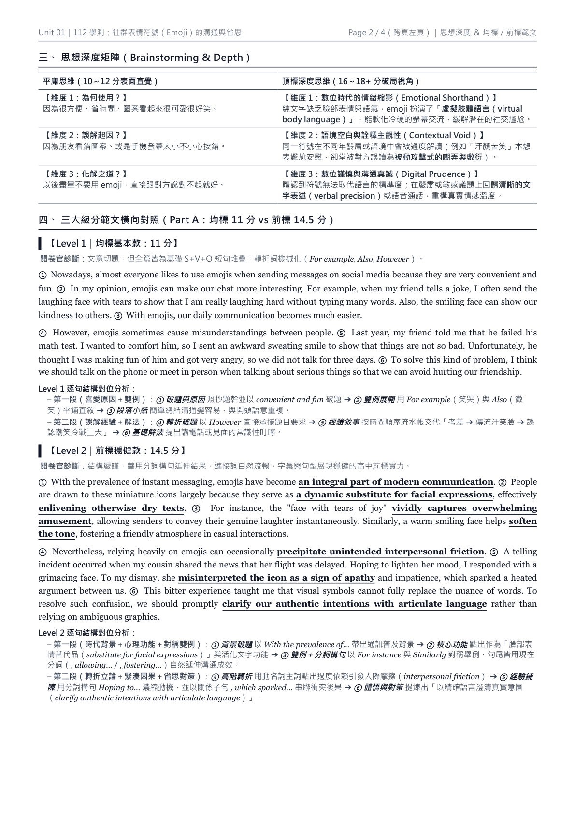
平庸直覺 vs 頂標破局；11 分均標 vs 14.5 分前標範文及逐句結構分析。
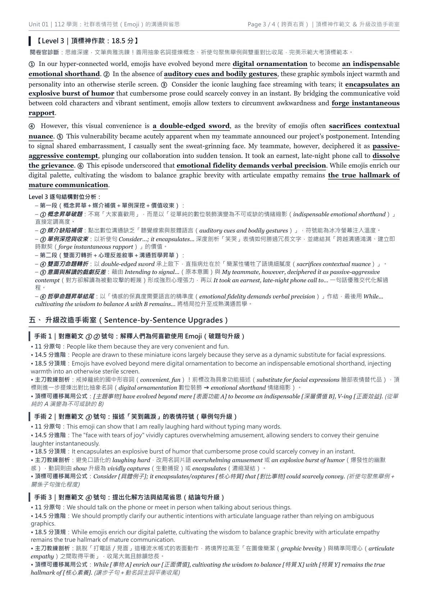
18.5 分神作剖析、雙面刃轉折句、主刀教練 3 大句型萬用遷移公式。
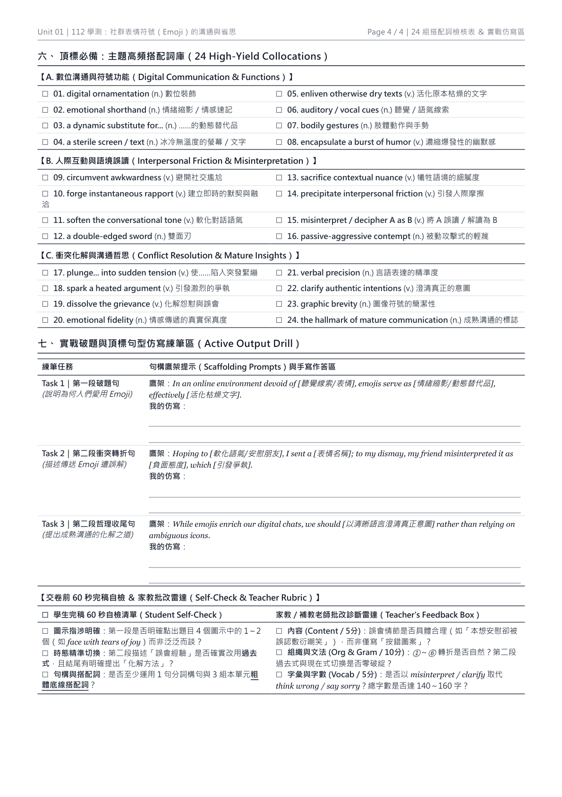
主題搭配詞勾選表、三大任務手寫仿寫鷹架、交卷前 60 秒自檢雷達。
不憑空吹噓。以美國亞利桑那州立大學（ASU）國際 TESOL 專業證照，以及 ETS 新制多益 960 分金色證書，為每一次教學提供最高規格的專業背書。
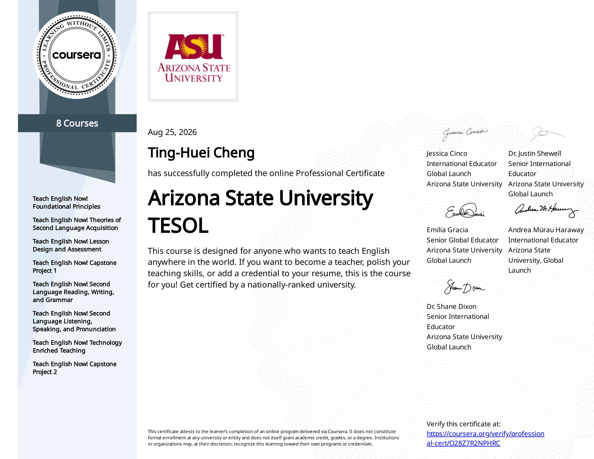
由全美頂尖的亞利桑那州立大學（ASU）頒發，完成全套 8 門專業專門課程（涵蓋二語習得理論、教案與評量設計、科技融入教學 Technology-Enriched Teaching 等）。
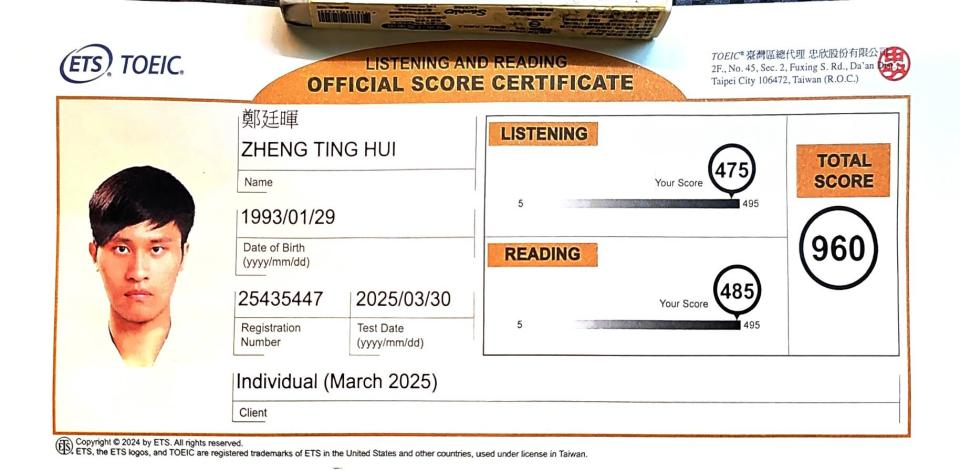
聽力 475 分、閱讀 485 分，總分 960 分頂尖表現。證明具備母語級長篇學術與商務閱讀理解速度，以及對細微連音與語境推論的敏銳掌握。
針對不同學習階段與檢定目標，導入專屬教材庫、白板專案與 AI 自動化練習體系。
專為國二、國三考生設計。打破零碎背誦，以 16 單元完整重構國中全文法體系，搭配歷屆真題與錯題庫螺旋回測，目標直取 A++ 滿級分。
從均標到頂標的對照升級指南。採用獨家「黃金四頁微創手術」講義，針對圖表題、漫畫題、書信與議題論述，進行句構重組與思維範式轉移。
多益 850+ 藍金證書與雅思 7.0+ 跨學科精讀。精選行為經濟學、認知科學與商業管理原著，鍛鍊長篇耐力與細節比對，杜絕盲目刷題。
不誇大速成，用真實的白板筆記、檢定證照與家長真實回饋說話。
「他這一次全班第3、校排第5！英文這次同學都考不好，他考得還不錯，英文考了88分！我有感覺到他慢慢變強了！」
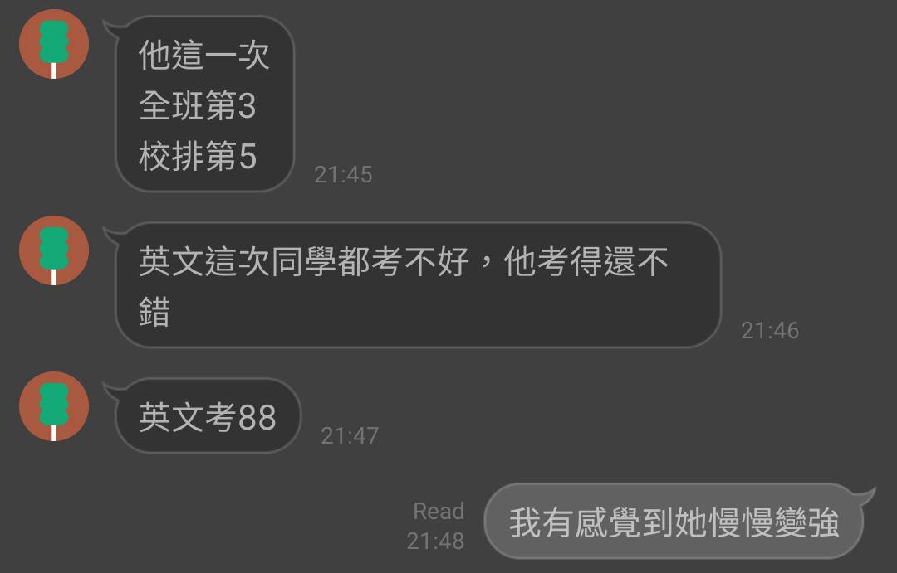
「本次出國我們岑岑寶貝成為全團翻譯大使！幫忙跟店家商討盧好久，讓阿姨當她是女神一樣捧！感謝老師讓她神速進步！在日本都在當小小翻譯！」
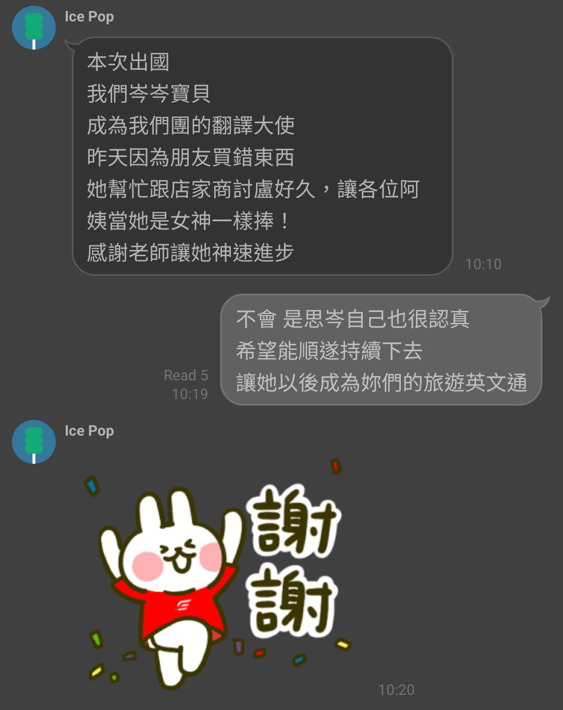
「育穎他答題的速度想比較多、可能怕錯誤、所以比較慢，在麻煩老師教導。老師：好，基礎實力上來就會逐漸順起來。家長：對啊、他英文有進步很多了。很謝謝你對他的用心！」
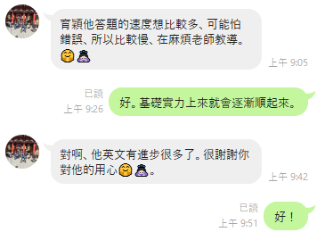
「英文14，老師立大功！我選擇題錯成那樣本來以為沒救了，能拿 14 級分頂標真是奇蹟！一定是作文拉回來的，所以說是老師您的功勞！努力有回報太感動了！」
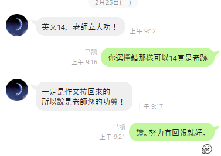
「一個老師的思維天花板，就是學生所能觸摸到的世界極限。」
我不僅教授應考技巧，更堅持每日沉浸於世界頂尖播客數小時的深度對話中。將最前沿的神經科學、行為心理學、AI 科技思辨與高階溝通藝術，轉化為課堂中最純粹的思維底氣。
Dr. Andrew Huberman · 史丹佛大學醫學院教授
神經可塑性（Neuroplasticity）、多巴胺獎勵機制、工作記憶上限與睡眠鞏固。
融入教學實踐：以真正的腦科學原理指導英文學習。依循大腦生理機制設計課堂「認知負荷控制」與「認知迭代」節奏，打破疲勞死背，讓單字與文法成為長期神經迴路。
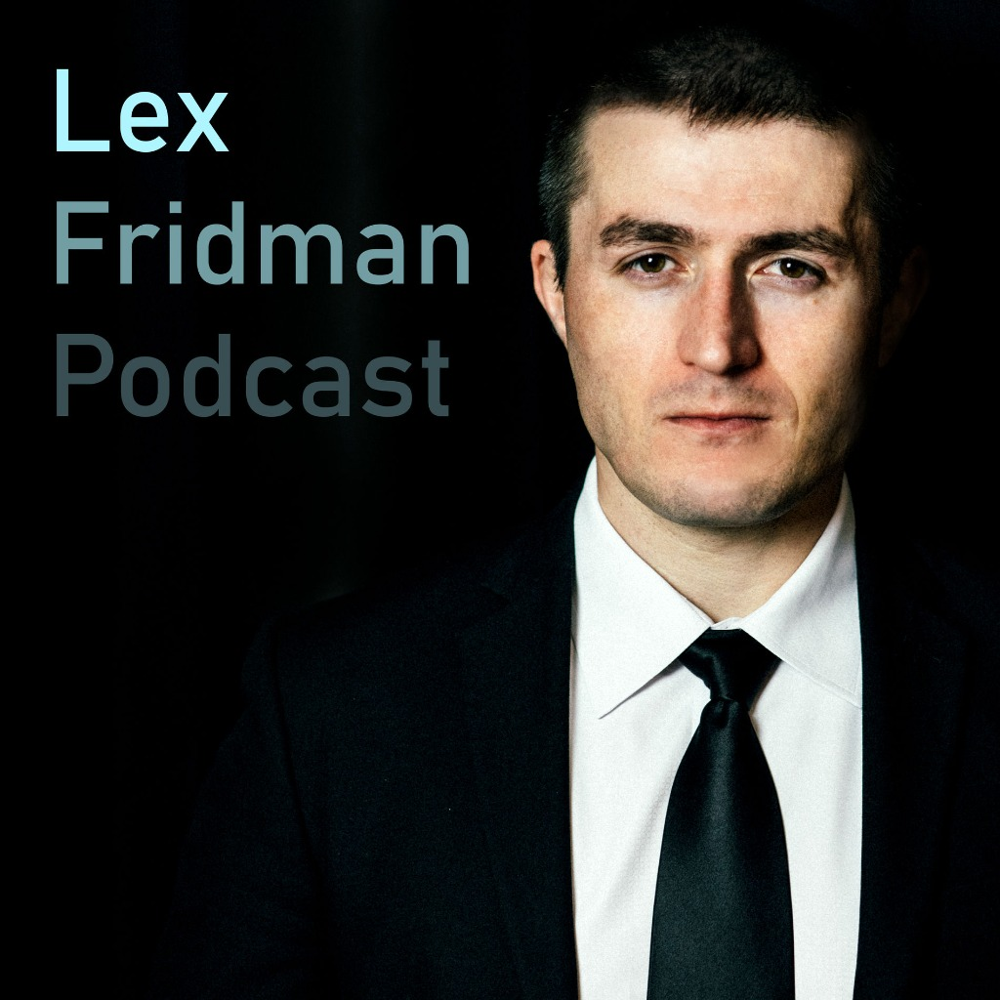
Lex Fridman · MIT 人工智慧研究員與思考者
科技哲學、歷史深層脈絡、地緣政治、批判性思考與長篇複雜論述。
融入教學實踐：每日吸收 3~4 小時世界最高密度的理性英文對話，將深層思維注入自編教材（如 112 學測 Emoji 考題之媒介哲學分析），帶領學生跳脫八股套句，寫出具備思想高度的滿分作文。
Steven Bartlett · 英國頂尖青年創業者與暢銷作家
高階商務談判、人性心理洞察、真實生活表達與卓越領導力心態。
融入教學實踐：擺脫教科書陳舊僵硬的句型，將歐美真實商業精英、心理學者與頂尖思想家的自然語感融入教學。無論多益商務情境或留學履歷面試，皆能展現從容得體的英文說服力。
「我不僅僅是一位英文老師，更是一位持續站在世界思潮浪尖的終身求知者。
每天沾染全世界最先進的深度文化與科學資訊，是我能給予每一位學生最純粹、最堅實的思維底氣。」
英語教學專家 × 認知心理與 AI 系統架構師
國立臺灣師範大學成人與繼續教育學系（師大教育專業出身），高中就讀臺北市立士林高商應用外語科。大學指定科目考試（指考）英文全國 PR98，高二即考取多益金色證書。具備 ASU 國際 TESOL 專業認證、10 年家教與教會隨行口譯經驗。
在進入大學以前，我也曾淹沒在無休止的文法選擇題與單字死背之中。即便在升學考試中取得頂尖成績，真正接觸到原汁原味的真實英語世界時，我才赫然驚覺傳統教育的脫節與枯竭。
那成了我開啟家教生涯的契機。從大一開始執教至今 10 年，我鑽研教育心理學的「認知負荷理論」、語言學的「語源與語音感知」，並將近年爆發的生成式 AI 與自動化工程徹底融入教學交付。
我不把學生逼進題海咬牙苦撐，而是透過 Figma 白板進行視覺化透視、藉由自編的雙跨頁作文手術室重構大腦神經網絡，並用全自動 AI 系統在下課後十秒無縫遞送專屬音檔與複習作業。
對我而言，英語不只是謀生的工具，它構成了我思索世界的核心維度。如果你期待一段更豐富、更立體、真正具備思辨力的英語學習旅程，我會是你最堅實的領路人。
雙薪父母平時忙碌，我們透過科技自動化閉環與全透明課堂，讓您不再為了孩子的英文生悶氣。
下課後 10 秒自動派發客製作業與 AI 自然真人語調發音音檔。孩子拿起手機或平板即可隨點隨聽、線上作答繳交，徹底終結家庭催作業的緊張衝突。
每次上課均在 Figma 雲端白板進行思維透視，所有即時批註、錯誤分析與觀念圖解永久保存。家長隨時可點開連結翻閱，不再「下課後一片空白」。
不只教學生，每次下課後主動向家長同步本週盲點突破重點、作答答對率與段考複習進度。真正做到家長隨時掌握學習成效、安心不盲猜。
完全跟得上！廷暉老師出身師大教育專業，深諳教育心理學與「認知負荷理論」。我們不以題海施壓，而是像對待育穎同學一樣「先扎根、建立做題安全感」，透過視覺白板分步引導，讓孩子逐步找回自信與節奏。
完全不需要昂貴設備！只需一台一般筆電、桌機或 iPad 平板（搭配耳機麥克風即可）。課堂中學生必須在白板上同步圈選、填答與討論，並非單向聽講，90 分鐘節奏緊湊，注意力反而比傳統大班補習更集中。
絕不強迫推銷。這是一次客觀的「英語認知體檢」，廷暉老師會針對孩子過去的考卷、作文或盲點進行剖析，並提供具體的突破方案與建議。若評估後覺得暫不適合，您也能帶著這份診斷建議自行複習。
可以！我們提供非同步 LINE 課後問答支援。孩子平日複習遇到卡關題目隨時拍照傳送至 LINE，廷暉老師會在空檔透過語音或白板截圖親自解惑，不讓問題積累到下週。
預約 30 分鐘免費線上診斷（Google Meet / Discord）。我們將檢視孩子過去的學習盲點，並提供專屬學習成長建議。
直接加廷暉老師 LINE（ID：TingZheng2），直接傳送孩子近期的考卷、段考錯題或作文，免填表單，快速為孩子安排 30 分鐘線上診斷！
感謝您的信任！系統已將預約資訊直接發送至廷暉老師的 Email 信箱。老師將於 24 小時內透過 Email 或 LINE 與您確認試教診斷時段！